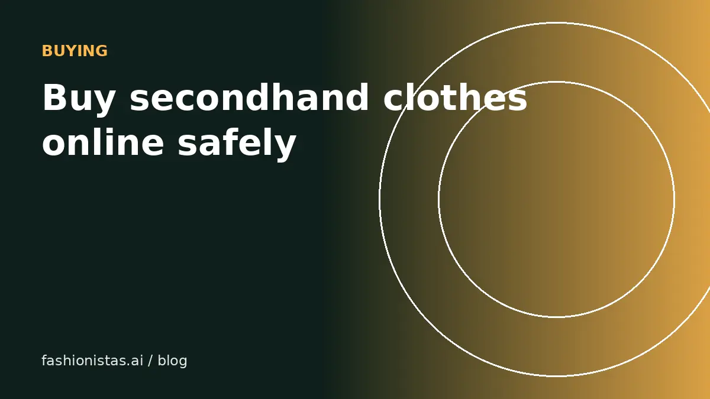

How to buy secondhand clothes online safely, and get the fit right

Buying secondhand online can get you better clothes for less money, with a smaller footprint. It also comes with risks new shopping doesn't: final sales, items that don't match the photos, the wrong fit, and the occasional scam. This guide covers how to check a seller and a listing, the questions to ask, how to protect your payment, and how to get the fit right first time.
Stay inside the app
The most important rule: buy and pay through the app's own checkout.
Resale apps hold your payment and offer buyer protection when you pay through them. Poshmark, Mercari, Depop, Vinted and eBay each have their own process for items that don't arrive or aren't as described, with a window to report problems after delivery.
Paying outside the app, by bank transfer, Zelle, Cash App, gift cards or "friends and family" payments, usually means no protection at all. A seller who asks you to pay outside the app, or to message on another platform, is a major red flag.
Check the seller
- Reviews and ratings: read a few recent reviews, not just the star average. Look for comments about accurate descriptions and fast shipping.
- Number of sales: new sellers aren't necessarily bad, but be more careful with expensive items from accounts with no history.
- Closet or shop: does it look like a real person's wardrobe or a consistent small shop? Dozens of identical "new" designer items at low prices is a warning sign.
- Responsiveness: a quick, clear answer to a question is a good sign.
Check the listing
- Real photos: the seller's own photos, not stock images. Reverse image search the main photo if something seems off.
- Labels: brand, size and fabric labels should be visible.
- Flaws: honest sellers show them. A listing with no flaws mentioned on an old item deserves a question.
- Measurements: essential for fit. If they're missing, ask.
- Price: compare with sold prices for similar items. Too good to be true usually is, especially for designer goods. See our guides to spotting fake bags and fake sneakers.
Questions worth asking
- "Could you share measurements: pit to pit, length, waist and inseam?"
- "Are there any flaws, stains, odors or repairs not shown?"
- "Is it from a smoke-free and pet-free home?" (Important if you have allergies.)
- "Does it have any stretch?"
- "Could you send a photo of the label or tag?"
- For designer items: "Could you share photos of the serial, date code or heat stamp?"
Keep questions in the app's messaging so there's a record if something goes wrong.
Get the fit right
Fit is the most common reason secondhand clothes don't work out, and many resale purchases are final.
- Know your measurements. Measure a garment you own that fits well, using our measuring guide, and save the numbers.
- Compare with the listing. Within about an inch on key measurements usually means a similar fit.
- Don't trust labels across brands, countries or eras. See our size conversion guide.
- See it on you. Paste the listing link into fashionistas.ai Try it on with your photo to check the color and style on your body before buying.
When something goes wrong
- Don't accept or rate the order if the app asks you to confirm before you've inspected the item.
- Report the problem within the app's window, which is often just a few days after delivery. Check your app's rules.
- Photograph everything: the item, the flaw, the label and the packaging.
- Explain clearly and factually, referring to what the listing said.
- Follow the app's return instructions. Don't send items back outside the process, or you may lose protection.
Most apps distinguish between "not as described", which is covered, and "changed my mind" or "doesn't fit", which often isn't. That's another reason to check measurements first.
Spotting common scams
- Off-app payment requests: the most common scam. Decline.
- Fake "payment received" emails sent to sellers, or fake shipping notifications sent to buyers. Check status inside the app, never via email links.
- Phishing links in messages asking you to "verify your account". Don't click; apps don't ask for passwords in messages.
- Too-cheap luxury. Brand-new designer items at a fraction of market price.
- Stolen photos. Reverse image search the photos on expensive items.
If something feels wrong, report the account in the app and move on.
Making secondhand part of your routine
The best secondhand shoppers buy deliberately. Keep a short list of what you actually need, save searches for those items on two or three apps, and set price alerts where available. Check measurements, see it on you with Try it on, and buy from sellers with good reviews. You'll spend less, waste less, and end up with a wardrobe you actually wear. When something doesn't work out, it goes back into the resale loop.
Bundles and offers for buyers
Bundling saves money: many apps let you combine several items from one seller into a single purchase with one shipping charge, and sellers often offer a bundle discount. Making a reasonable offer is normal on Poshmark, Mercari and Depop. Around 10% to 20% below the list price is common, and a polite message helps. Very low offers usually get declined or ignored.
Shopping secondhand designer
For designer items, prefer apps or services that authenticate, such as eBay's Authenticity Guarantee on qualifying items or Poshmark's authentication on eligible sales of $500 or more. Ask for close-ups of serials, stamps and hardware, and compare against our guides to spotting fake bags and fake sneakers. If the price is far below recent sold prices, assume there's a reason.
Check the shipping and handling time
Look at the seller's typical shipping time in their reviews or shop info. Sellers who ship within a day or two are generally more organized, and the app's protection window starts at delivery, so slow shippers just mean a longer wait.
Caring for secondhand clothes when they arrive
- Wash or dry-clean items according to the care label before wearing.
- Air out anything with a storage smell; a little white vinegar in the wash helps with odors.
- Check seams and buttons and fix small issues early.
If something doesn't work out, you can resell it. Our beginner reselling guide shows how.
FAQ
Is it safe to buy clothes on Poshmark, Depop or Mercari?
Yes, when you buy and pay through the app's own checkout, which comes with buyer protection. Avoid paying outside the app.
What if a secondhand item isn't as described?
Report it through the app within its claim window, usually a few days after delivery, with photos. Don't confirm or rate the order before you've inspected the item.
Can I return secondhand clothes if they don't fit?
Usually not. Most resale purchases are final unless the item isn't as described. Check measurements before buying.
How do I avoid scams on resale apps?
Pay only through the app, be wary of prices far below market, check seller reviews, ask for real photos, and never move the conversation or payment to another platform.
How can I see how secondhand clothes will look on me?
Use virtual try-on. With fashionistas.ai Try it on, you paste the listing link and add your photo to see the item on you.